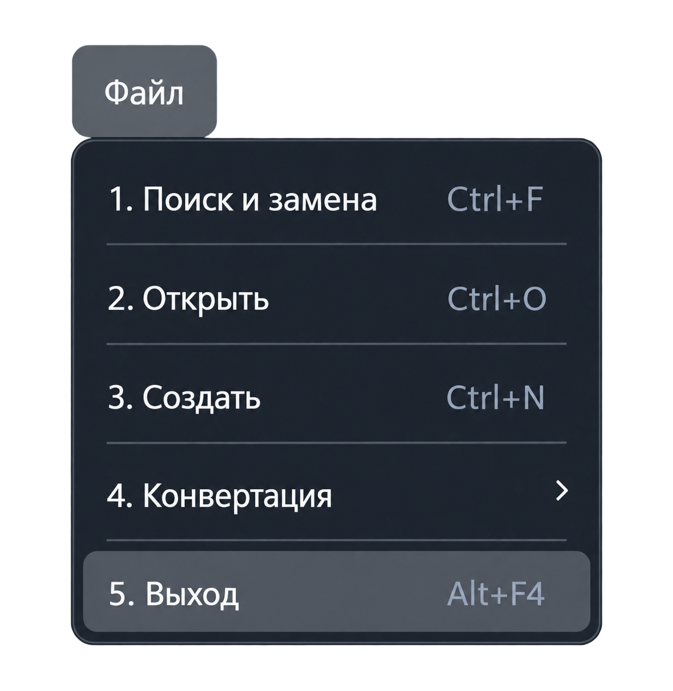

Функция «Выход»
Команда «Файл → Выход» завершает работу приложения. Закрыть главное окно также можно его кнопкой закрытия или сочетанием Alt + F4, когда главное окно активно.

Перед завершением работы
- Завершите текущую проверку и дождитесь окончания операций с оборудованием.
- Сохраните изменения в открытых документах через «Сохранить» или «Сохранить как».
- Убедитесь, что нужные результаты и протоколы сохранены.
- Выберите «Файл → Выход».
Важно: команда «Выход» не заменяет сохранение документов. Сохраните нужные изменения до завершения работы.
Закрытие отдельного окна
Сочетание Alt + F4 относится к активному окну Windows. Если активна справка или другое отдельное окно, оно может закрыться без завершения основного приложения.